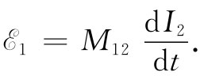

现在我们想要考虑一种导线线圈固定而磁场在变化的情形。当我们过去描述磁场由电流产生时，仅考虑恒定电流的情况。但只要电流变化缓慢，磁场在每一时刻就几乎与一恒定电流的磁场相同。在这一节的讨论中，我们将假定电流总是足够缓慢地变化着，使得这种情况保持正确。
导致变压器起作用的那些基本效应，可由图17-8所示的那两个线圈的配置来加以演示。线圈1由绕成长螺线管形状的一根金属导线构成。在这个线圈外面——与之绝缘的——还绕上一个仅有几匝导线的线圈2。现在，若电流通过线圈1，我们知道在其内部将出现一磁场，这磁场也穿过线圈2。当线圈1中的电流变化时，磁通量也起变化，从而将会在线圈2中感生一电动势。现在我们将计算这一感生电动势。
图17-8 线圈1中的电流会产生一个穿过线圈2的磁场
在§13-5中我们曾看到，在一长螺线管内磁场是均匀的，而其大小为
式中N1 为线圈1的匝数，I1 为通过其中的电流，而l即为线圈长度。令线圈1的横截面积为S，那么B的通量就是它的大小乘以S。如果线圈2共有N2 匝，则这通量与线圈2耦合了N2 次。因而在线圈2中的电动势就由下式给出：
（17.24）
在式（17.23）中，唯一随时间变化的量为I1 。因此电动势为
（17.25）
我们看到，线圈2中的电动势与在线圈1中的电流变化率成正比。该比例常数基本上是两线圈的一个几何因数，称为互感 ，而往往被记作M21 。于是式（17.25）便可以写成
（17.26）
现在假设电流通过线圈2而要问线圈1中的电动势。我们应该计算出磁场，它处处与电流I2 成正比。穿过线圈1的磁通匝连数应与几何形状有关，但同时又应与I2 成正比。因此，在线圈1中的电动势再次正比于dI2 /dt，可以把它写成
 （17.27）
要算出M12 ，比起刚才对于M21 所做的计算更困难一些。我们不打算现在就来进行计算，因为在本章稍后将会证明M12 必然等于M21 。
由于任何 线圈中的磁场总是与其电流成正比，因此对任何两个线圈就会获得同种类型的结果。式（17.26）和（17.27）具有相同形式，只是常数M21 和M12 不同，它们之值应取决于两线圈的形状和它们的相对位置。
图17-9 任何两个线圈都有与ds1 ·ds2 /r12 的积分成正比的互感M
假设我们希望求得任意两个线圈——比如如图17-9所示的那两个线圈——之间的互感，我们知道在线圈1中的电动势其一般表式可写成
式中B为磁场，而积分是对以电路1为边界的整个面进行的。在§14-1中我们已经知道，这种对B的面积分可以与矢势的一个线积分相联系。具体地说为
∫（1） B·nda=∮（1） A·ds1 ，
式中A代表矢势，而ds1 则是电路1的一个线元。该线积分必须环绕电路1进行。因此，在线圈1中的电动势可以写成
（17.28）
现在让我们假设在电路1处的矢势是由电路2中的电流产生的。于是这矢势便可以写成环绕电路2的一个线积分：
（17.29）
式中I2 代表电路2中的电流，而r12 则是从电路2中的线元ds2 至电路1上我们正在计算其矢势的那一点之间的距离（见图17-9）。合并式（17.28）和（17.29），则可将电路1中的电动势表达成一个双重的线积分：
式中的积分全都是对于固定电路进行的。唯一与积分的变量无关的只有电流I2 。因此，我们可以把它提到两个积分号之外。于是电动势就可以写成
式中系数M12 为
从这一积分我们见到，M12 仅取决于电路的几何结构，它依赖于两电路间的一种平均间距，而在这个平均过程中对两线圈互相平行的那些节段必须加权。我们的式子可以用来计算两个任意形状电路间的互感。并且，它表明M12 的积分与M21 的积分全同。因此，我们已证明了这两系数是全等的。对于只含有两个线圈的系统，这两个系数M12 和M21 常被表示成没有任何下角标的符号M，简单叫作互感 ：
M12 =M21 =M.